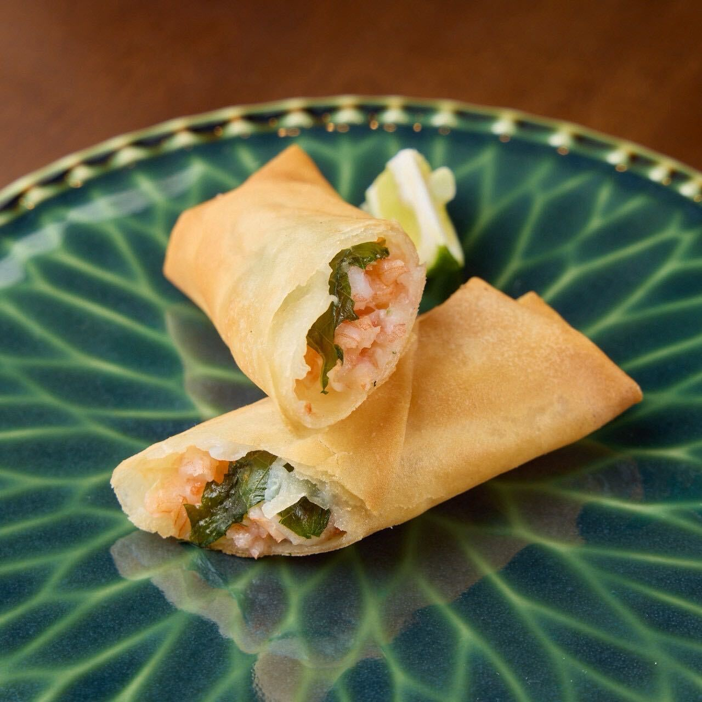
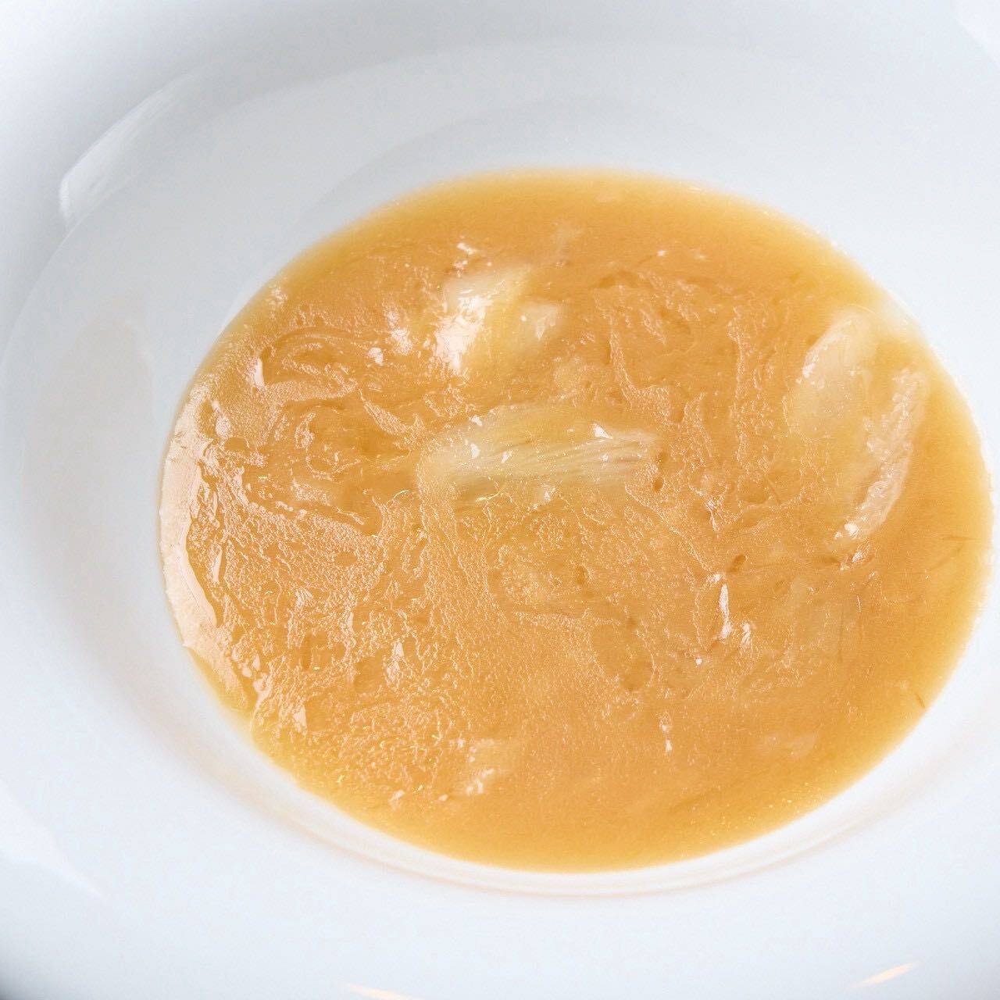
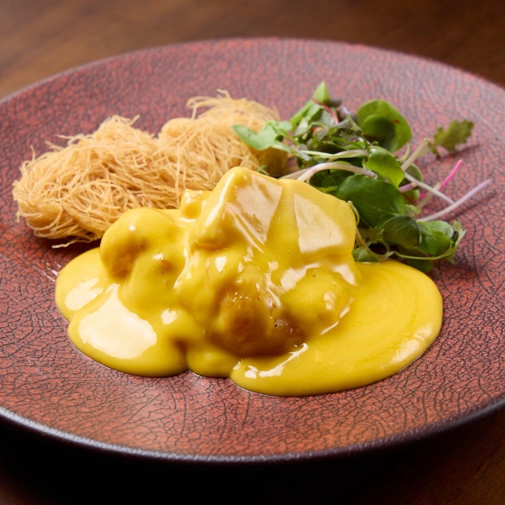

おまかせコース
旬の食材と丁寧な仕込みによる中華料理を、コースでお楽しみいただきます。
香りと味わいの変化を感じながら、料理とワインのペアリングをご堪能ください。
-
01
胡桃の飴炊き
琥珀核桃
-
02
前菜六種盛り合わせ
六味彩碟
-
03

海老と発酵赤唐辛子の春巻き
泡椒鮮蝦春卷
-
04

フカヒレスープ
魚翅上湯
-
05

海老のマンゴーマヨネーズ
沙律明蝦球
-
06
黒酢酢豚
黑醋咕嚕肉
-
07

麻婆豆腐 または 担々麺
麻婆豆腐 或 擔擔麵
-
08
自家製杏仁豆腐
自家製杏仁豆腐
-
09
プチエッグタルト
迷你蛋撻
-
10
中国茶
中國茶
料金
¥7,700
所要時間
約120分
ワインペアリング
ご用意可能
ご予約
前日までにお願いします